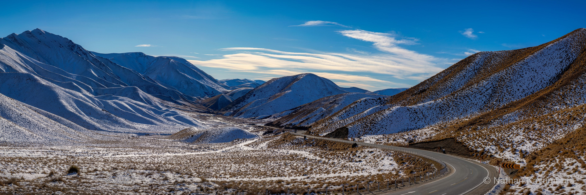
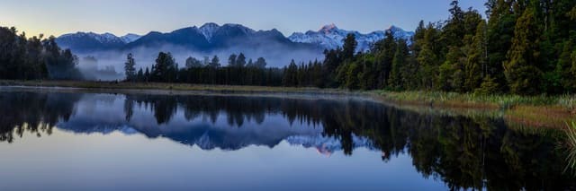
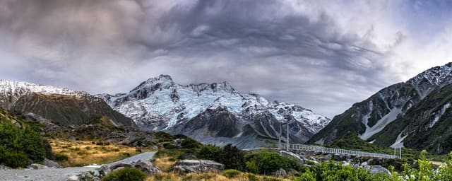

NathanK Photography
Home
Gallery
About
Ctrl/⌘ + scroll or pinch to zoom · drag to pan

Alpine & Lakes
Lindis Pass
Lindis Pass, Otago, New Zealand
NK
Nathan Kavumbura
Photographer
The story behind this shot hasn't been added yet.

← Previous
Lake Matheson
All panoramas
Next →
The bridge at Kazad Doom
